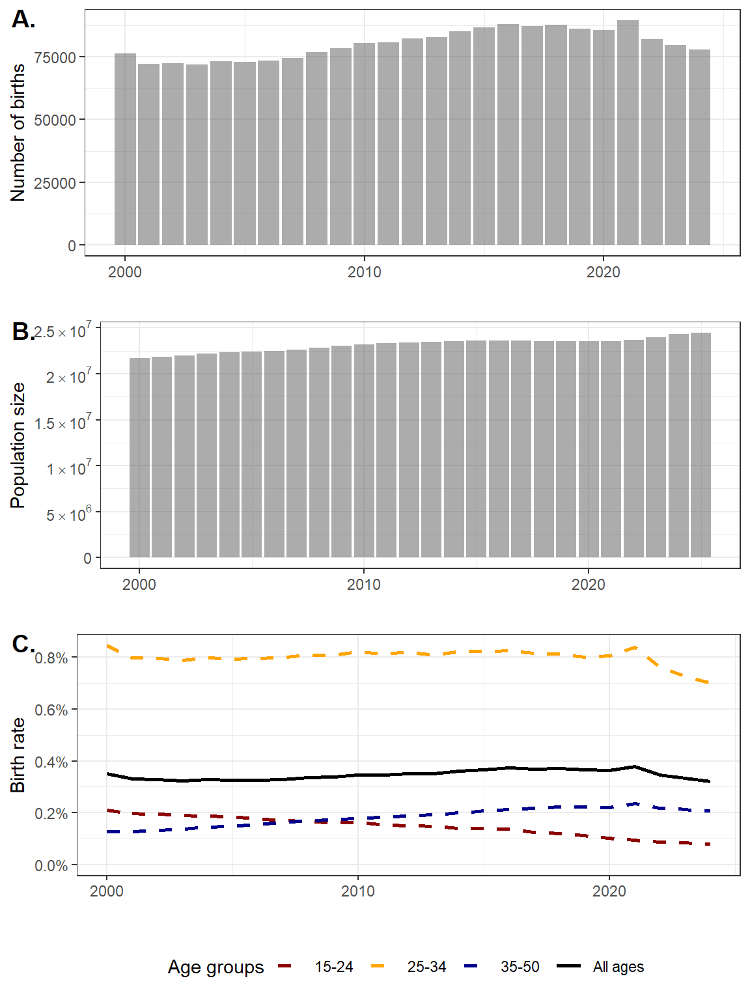

Code
birth_df1 = birth_agg_df %>%
filter(mother_age %in% 15:50,year>=2000) %>%
dplyr::mutate(age_group = cut(mother_age,c(15,25,35,Inf), right = FALSE, labels = c("15-24", "25-34", "35-50"))) %>%
group_by(year,age_group) %>%
dplyr::summarise(n=sum(n), .groups="drop")
birth_df2 = rbind(birth_df1 %>% dplyr::mutate(data="by age"),
birth_df1 %>%
group_by(year) %>%
dplyr::summarise(n=sum(n),.groups="drop") %>%
dplyr::mutate(age_group="All ages",data="All ages"))
pop_df1 = pop_df %>%
filter(age %in% 15:50,year>=2000) %>%
dplyr::mutate(age_group = cut(age,c(15,25,35,Inf), right = FALSE, labels = c("15-24", "25-34", "35-50"))) %>%
group_by(year,age_group) %>%
dplyr::summarise(n=sum(n), .groups="drop")
pop_df2 = rbind(pop_df1 %>% dplyr::mutate(data="by age"),
pop_df1 %>%
group_by(year) %>%
dplyr::summarise(n=sum(n),.groups="drop") %>%
dplyr::mutate(age_group="All ages",data="All ages"))
scientific_10 <- function(x) { ifelse(x==0,0,parse(text=gsub("e\\+*", " %*% 10^", scales::scientific_format()(x)))) }
p1 = birth_df1 %>%
dplyr::mutate(year = dmy(paste0("01-01-", year))) %>%
ggplot(aes(x=year, y = n))+
geom_bar(stat="identity",alpha=0.5)+
scale_x_date(name="")+
scale_y_continuous(name="Number of births")
p2 = pop_df1 %>%
dplyr::mutate(year = dmy(paste0("01-01-", year))) %>%
ggplot(aes(x=year, y = n))+
geom_bar(stat="identity",alpha=0.5)+
scale_x_date(name="")+
scale_y_continuous(name="Population size", label=scientific_10)
p3 = birth_df2 %>%
rename(n_birth = n) %>%
left_join(pop_df2 %>% rename(n_pop = n),
by = c("year","age_group")) %>%
dplyr::mutate(p_birth = n_birth / n_pop,
year = dmy(paste0("01-01-", year))) %>%
ggplot(aes(x = year, y = p_birth,
colour = age_group,
linetype = age_group)) +
geom_line(,linewidth = 1) +
expand_limits(y = 0)+
scale_x_date(name="")+
scale_y_continuous(name="Birth rate",labels = scales::percent)+
scale_color_manual(name="Age groups",values=c("darkred","orange","darkblue","black"))+
scale_linetype_manual(name="Age groups",values = c("dashed","dashed","dashed","solid"))+
theme(legend.position = "bottom")
cowplot::plot_grid(p1,
p2,
p3, ncol=1,rel_heights = c(1,1,1.2),labels = c("A.","B.","C."))